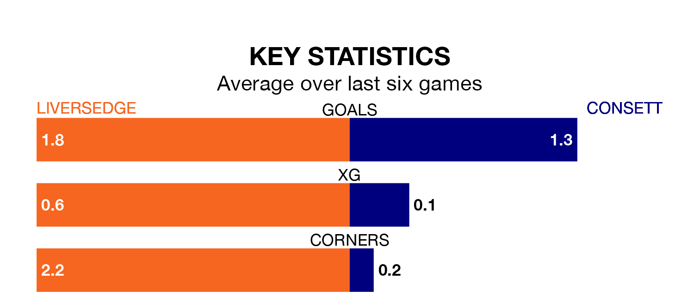

Consett travel to Liversedge on late Tuesday in the Northern Premier League Division One East.
The visitors come into the game on the back of a defeat in their last match, having lost to Stockton Town 3-2 away.
Liversedge, meanwhile, won their last match, 4-2 against Bridlington Town.
With 35 goals in 18 games so far this season, Consett are scoring more than average in the league with 1.9 goals per game. And they are conceding fewer than average, letting in 22 goals at a rate of 1.2 per game.
Liversedge are also above average scorers, with 1.7 goals per game, compared to a league average of 1.6. They have conceded 1.3 goals per game.
The away side are fifth in the table after 18 games, of which they have won 11 and drawn two, earning 35 points.
The hosts are seven places behind Consett in 12th, with eight wins and two draws putting them on 26 points.
Liversedge are in mixed form in the Northern Premier League Division One East, with two wins and two draws from their last six games.
With three wins and a draw over that period, Consett's form is slightly better – they have taken 10 points from 18, compared to Liversedge's eight.
Updated: 11:31, 09/01/24